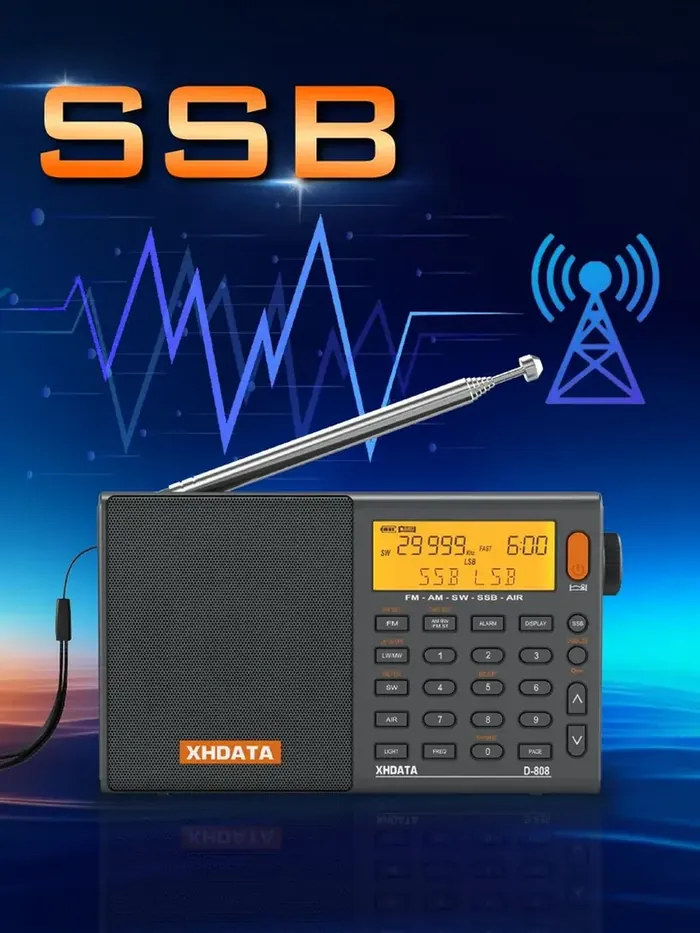

XHDATA D-808: всё, чтобы начать слушать
Понятная инструкция к приёмнику, все его диапазоны, станции Москвы и Подмосковья с расписанием, онлайн-эфир и подборка недорогих антенн. Для тех, кто только купил приёмник, и для тех, кто хочет слышать больше.

Загрузка…
Инструкция
Кнопки на схеме, включение, память, автопоиск, SSB, часы. Каждое действие по шагам.
Диапазоны и как ловить
FM, СВ, ДВ, КВ, авиа и SSB: что где звучит, когда слушать и как настроиться.
Что слушать
Все FM-станции Москвы, станции области, СВ/ДВ, русскоязычное КВ-вещание и служебный эфир.
Программа дня и вечера
Что включить утром, днём, вечером и ночью. Популярные передачи по времени выхода.
Радиолюбители и радиохулиганы
Круглые столы, Си-Би, «свободные операторы» и пираты: частоты, время и как настроиться в SSB.
Антенны до 3000 ₽
Антенны с Wildberries с реальными отзывами: фото, что пишут покупатели, подключение, рейтинг приёма.
Три совета, с которых стоит начать
- Длинные и средние волны принимает внутренняя антенна. Телескоп здесь не помогает. Поворачивайте приёмник: ферритовая антенна направленная, и при правильном повороте слабая станция выходит из шума.
- Короткие волны слушайте вечером и у окна. В бетонном доме КВ глохнет. Простой провод 5–7 м, подключённый к гнезду внешней антенны, даёт больше, чем любые настройки.
- Держите приёмник подальше от зарядок, светодиодных ламп и компьютера. Импульсные блоки питания сильнее всего шумят на СВ и КВ. Когда слушаете, отключите зарядку самого приёмника.